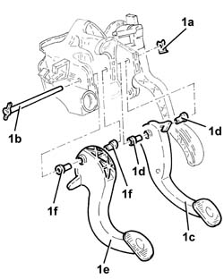
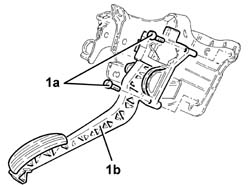

3330B16 PEDAL UNIT ASSEMBLY - DISMANTLE REBUILD AT BENCH
- Path
- Procedures > 33 BRAKING SYSTEM > 3330 HYDRAULIC BRAKING SYSTEM > 3330B PEDAL UNIT > 3330B16 PEDAL UNIT ASSEMBLY - DISMANTLE REBUILD AT BENCH
- Kind
- repair procedure (removal / refitting; the operation number is the code)
- Applies to
- all engines; all production periods
- Interactive page
- https://sloeber94.github.io/elrnDB-aGt/en/#/125001340
Applies to: all engines; all production periods
 Removing
Removing
 Refitting
Refitting1. Remove the retaining clip (1a), withdraw the bolt (1b), and remove the brake pedal (1c) complete with bushes (1d) and clutch pedal (1e) complete with bushes (1f).

Applies to: all engines; all production periods
1. Undo the bolts (1a) and remove the accelerator pedal with integrated potentiometer (1b).

Applies to: all engines; all production periods
Refitting
RemovingPlace the accelerator pedal with potentiometer incorporated back in its housing and secure it using the bolts.
Refit the brake pedal and clutch pedal complete with bushes iin their seats, then secure them with the bolt and retaining clip.